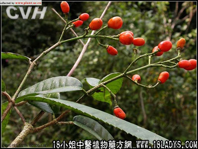

别名：乌药、猫药、香叶子树、天台乌、台乌。
植物名：乌药。
生长环境：本品为常绿灌木或小乔木。阳性种树，生于山岗或疏林下。
分布：我国东南部各省，南至两广均产、广州近郊不常见。
入药部分：根。
采集期：根。
采购地点：从药材公司购入。
性味：性微温，味辛，气香。
功能：曲风，散寒，行气止痛，清肿散瘀。
主治、用量和用法：1、气痛：干根5钱至1两，清水煎服；2、腹痛：用法同上；3、疝痛：配伍用；4、跌打瘀肿：配伍用；5、呕吐：干根3钱、用水煎，喂服。
验方：（治跌打瘀肿方）千打锤5钱、下山虎5钱、过江龙5钱、大罗伞5钱、小罗伞5钱、大还魂5钱、贼公叶5钱、田基黄5钱、清水四碗，煎成衣碗服。外敷：用上药为末，加酒煮热敷患处。
（方解）本方由八味活血散瘀药组成，入千打垂、大还魂、大小罗伞、贼公叶、田基黄之类，加以千打锤、下山虎兼行气，下山虎、大小罗伞、大还魂、贼公叶祛风、合为有力的散瘀、祛风、行气之剂。
（方歌）：跌打瘀肿千打锤，下山虎过江龙追，大小罗伞还魂草，贼公基黄煎过随，为末煮酒敷患处，瘀消肿散痛即除。